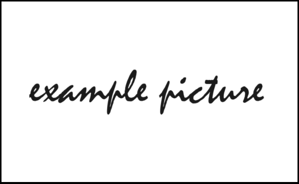

MarkDown语法
本条记录一些用markdown书写过程中遇到的一些官方文档中未找到的问题
1、居中问题
markdown语法本身并不能直接设置居中，但markdown文件支持html语法，所以直接利用html语法居中文字及图片。
图片居中
<div align="center"> <img src="图片地址" width = 500 height = 300 /> </div>
文字居中
<center>居中文字</center>
如下为显示效果:

2、字体问题
markdown语法本身也不支持字体改变，所以也需要使用html语法
改变字体大小
1 | <font size=1>字体大小size=1</font> |
使用参数 size 。可取值为1-7
如下为显示效果
字体大小size=1
字体大小size=3
字体大小size=5
改变字体颜色
1、英文字母
1 | <font color=red>红色</font> |
显示效果
红色
蓝色
黄色
黄绿色
2、十六进制编码
1 | <font color=#ff0000>红色</font> |
红色
绿色
蓝色
抚子
使用参数color。更推荐十六进制颜色显示，对于一些不常见的颜色有很好的适应性，并且还可以依据个人喜好改变RGB选择自己喜欢的颜色。英文表示更加简单易用，记住常见的几种颜色英文即可。
改变字体类型
1 | <font face="黑体">黑体</font> |
显示效果如下所示
黑体
宋体
仿宋
幼圆
楷书
华文行楷
华文隶书
华文新魏
华文彩云
华文琥珀
使用参数face。注意，字体类型的设置只能在电脑上才能显示字体效果，在手机上无法显示字体类型。
1 | <font size=5 color=red face="华文彩云">华文彩云</font> |
宋体
混合使用时注意参数之间加上空格。
3、缩进问题
1 |   or   表示一个半角的空格 |
如下为显示效果
示例文字
示例文字
示例文字
示例文字
4、页面内部跳转
1 | [文本内容](#需要跳转的标题) |
示例如下，可以跳转到本文的第一个标题
居中问题